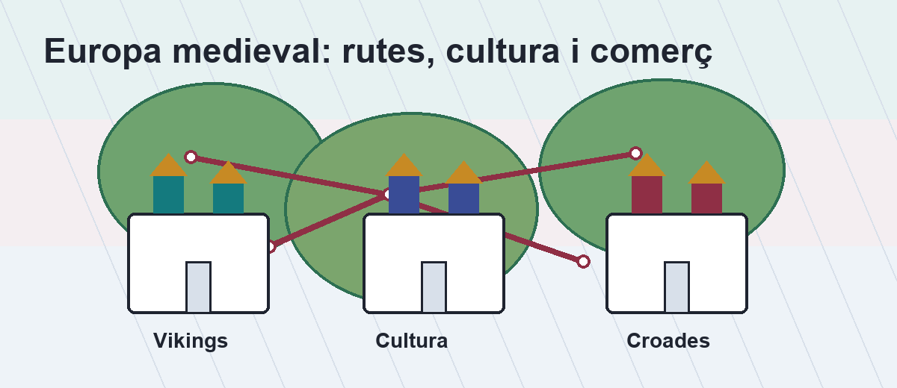

Estudia per blocs petits i comprova que ho has entès.
Aquesta web segueix el temari final corregit. Cada secció combina
idees clau, una petita escena visual, preguntes tipus test i
activitats per desenvolupar. La rúbrica queda al fons: ajuda a
recordar que cal situar els fets en el temps, explicar conceptes i
escriure amb cura.

Abans de començar
Memoritza els segles importants: IX-XIII i XI-XIII.
Relaciona cada tema amb una paraula clau.
Després de cada bloc, fes els exercicis sense mirar.
Cronologia essencial
Una línia del temps per no perdre's
Tria una data per veure per què és important.
6.4
Els Vikings
Un poble d'origen escandinau que va expandir-se per Europa entre els segles IX i XIII.
Origen i estereotips
Els Vikings provenien de l'actual Escandinàvia. La seva imatge
ha estat deformada pel còmic, el cinema i les òperes de Richard
Wagner: no eren només guerrers, també eren navegants,
comerciants i creadors de cultura.
Expansió i economia
Es van expandir cap a França, Rússia, Anglaterra, Bretanya i el
sud d'Itàlia. Comerciaven amb productes agrícoles i amb materials
com l'ambre rus i la pell de marta.
Cultura i política
Tenien sagues escrites en rúnic i una religió politeista amb
Thor, Odin, Loki i Freya. Políticament, apareixen relacionats amb
Normandia, Anglaterra i Sicília.
EscandinàviaAnglaterraNormandiaRússiaSicília
Paraula clauNavegants i comerciants
CulturaSagues, rúnic i Valhalla
PolíticaNormandia, Hastings i Roger II
Exercicis dels Vikings
1. Quin era l'origen dels Vikings?
2. Quin element mostra que els Vikings tenien cultura pròpia?
3. Desenvolupa: explica per què dir que els Vikings només eren guerrers és un estereotip.
6.5
Pensament i cultura
El coneixement medieval no només vivia als monestirs: també creixia a les ciutats.
Monestirs i abadies
Eren centres religiosos dirigits per monjos i monges. Protegien
el coneixement mitjançant traduccions. Figures com Roswitha i
Hildegarden de Bingen mostren que també hi havia dones cultes.
Universitats
Entre els segles XI i XII apareixen universitats a ciutats com
Bolonya, París, Oxford o Lleida. Usaven el llatí i el mètode de
l'escolàstica, basat en el diàleg entre professor i alumne.
Monestirs i abadies conservaven i traduïen el coneixement.
Exercicis de pensament i cultura
1. On es conservava gran part del coneixement religiós?
2. Què era l'escolàstica?
3. Desenvolupa: compara monestirs i universitats com a centres de coneixement.
Literatura medieval
L'amor cortès
Un gènere literari del segle XII lligat a Leonor d'Aquitània i a la cultura aristocràtica.
1Triangle amorós
Un amor prohibit amb secret i tensió.
2Dona idealitzada
El cavaller pateix i la converteix en protagonista.
3Trobadors i joglars
Uns componien poemes; els altres els cantaven.
Exercicis de l'amor cortès
1. Quin element és propi de l'amor cortès?
2. Qui cantava les composicions?
3. Desenvolupa: explica el paper de la dona i del cavaller en l'amor cortès.
7.1 - 7.2
Les Croades
Expedicions polítiques, militars i comercials organitzades per l'Església entre els segles XI i XIII.
Què van ser?
Les Croades buscaven control social, lluita contra l'infidel i
domini de les rutes comercials d'Orient. El 1095, el papa Urbà
II impulsa una expedició des del concili de Clermont per ajudar
l'imperi Bizantí i conquerir Jerusalem.
Motivacions i conseqüències
Hi havia motius religiosos, polítics i econòmics. Les Croades
van provocar pelegrinatges, ordes de cavallers, intercanvis
culturals i també radicalització religiosa.
Croades
ReligióPolíticaComerç
1095 Urbà II i Clermont1099 Jerusalem cristiàna1187 Saladino i Hattin
Exercicis de les Croades
1. Quin any s'impulsa la primera croada al concili de Clermont?
2. Quin producte era important per a les indústries tèxtils?
3. Desenvolupa: explica dues motivacions i dues conseqüències de les Croades.
7.3
Institucions: els bancs
Les fires, el comerç i les lletres de canvi van transformar l'economia medieval.
Bancs
Institucions creades per intercanviar moneda i protegir els estalvis de les persones.
Lletres de canvi
Documents que permetien cobrar diners en diferents territoris i facilitaven la mobilitat econòmica.
Fires
Espais comercials on s'acostumaven a vendre productes.
Exercicis de bancs i comerç
1. Per què es creen els bancs?
2. Què permetien les lletres de canvi?
3. Desenvolupa: explica la relació entre fires, bancs i lletres de canvi.
7.4
Els gremis
Organitzacions de comerciants i artesans que regulaven oficis i productes.
Qui?Comerciants i artesans
ExemplesMetges, llana, mestres de l'or
FuncionsFormar, protegir condicions i vendre a fires
Exercicis dels gremis
1. Què eren els gremis?
2. Quina era una funció dels gremis?
3. Desenvolupa: explica tres funcions dels gremis medievals.
Repàs final
Comprova si ho tens al cap
Fes servir aquestes targetes per repassar oralment abans de l'examen.
Repte de 10 minuts
Explica en veu alta una línia del temps amb cinc dates o períodes.
Defineix Vikings, escolàstica, Croades, bancs i gremis.
Escriu una resposta llarga sobre les Croades sense mirar els apunts.